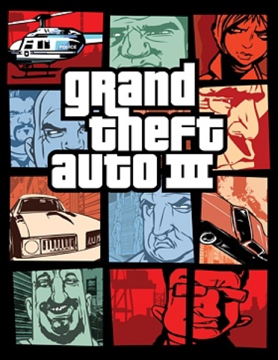

Open World · 2001
Grand Theft Auto III
The city became the protagonist and every rule became optional.

Cover: Wikipedia: Grand Theft Auto III
Facts
- Released
- 2001-10-23
- Genre
- Open World
- Category
- Open World
- Platforms
- Mobile, PC, PlayStation, Xbox
- Developers
- Rockstar North
- Publishers
- Capcom, Rockstar Games